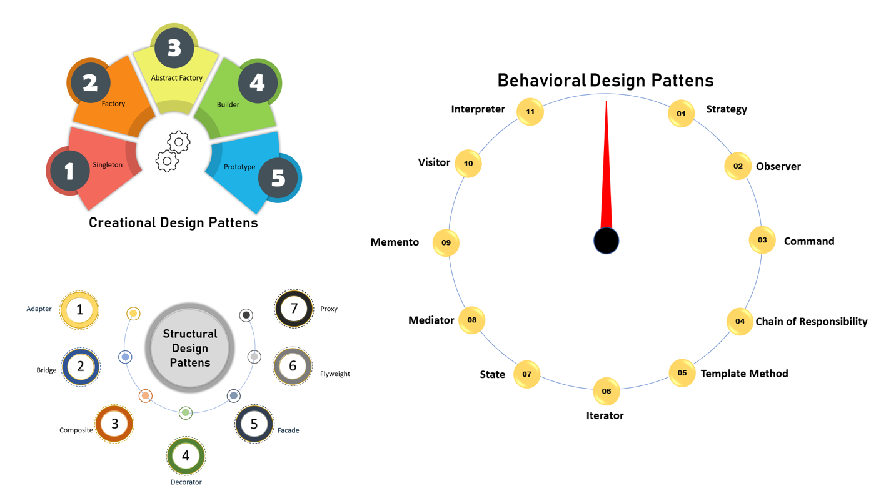

Introduction
Design patterns represent widely applicable, reusable strategies for addressing frequent challenges encountered in software design. Instead of being complete code implementations, they serve as templates or blueprints that can be customized to tackle particular problems across various contexts. By offering a standardized methodology and common vocabulary, design patterns simplify communication and collaboration among developers when resolving recurring design issues.
Design patterns are typically grouped into three main categories:
1. Creational Patterns
Creational design patterns are a category of design patterns in software engineering that focus on object creation mechanisms. They aim to create objects in a flexible and controlled manner, suitable to the situation, while hiding the complexities of instantiation and initialization from the client code.
- Singleton: Ensures a class has only one instance and provides a global point of access.
- Factory Method: Defines an interface for creating objects but lets subclasses alter the type of objects that will be created.
- Abstract Factory: Provides an interface for creating families of related or dependent objects.
- Builder: Separates the construction of a complex object from its representation.
- Prototype: Creates new objects by copying an existing object, known as the prototype
2. Structural Patterns
These patterns deal with object composition, helping ensure that if one part of a system changes, the entire system doesn’t need to do the same. Examples include:
- Adapter: Allows incompatible interfaces to work together.
- Bridge: Separates an object’s abstraction from its implementation.
- Composite: Composes objects into tree structures to represent part-whole hierarchies.
- Decorator: Adds responsibilities to objects dynamically.
- Facade:Provides a simplified interface to a complex subsystem.
- Proxy:Provides a surrogate or placeholder for another object
3. Behavioral Patterns
These patterns focus on communication between objects, defining how objects interact and distribute responsibility. Examples include:
- Strategy:Enables selecting an algorithm’s behavior at runtime.
- Observer:Defines a dependency between objects so that when one changes state, all dependents are notified.
- Command:Encapsulates a request as an object, allowing for parameterization and queuing of requests.
- Chain of Responsibility:Passes a request along a chain of handlers.
- Template Method:Defines the skeleton of an algorithm, deferring some steps to subclasses
- Iterator: It provides a standard way to sequentially access elements of a collection without exposing its underlying representation or structure.
- State:Allows an object to alter its behavior when its internal state changes.
- Mediator: It reduces coupling between components by making them communicate indirectly through a special mediator object.
- Memento: It enables capturing and externalizing an object's internal state so that the object can be restored to that state later, without violating encapsulation.
- Visitor: It allows you to separate an algorithm from the objects on which it operates, enabling you to add new operations to existing object structures without modifying their classes.
- Interpreter: It defines a way to interpret and evaluate sentences or expressions in a language by representing its grammar as a set of classes.
Key Characteristics
- They encapsulate knowledge about which concrete classes the system uses.
- They hide how instances of these classes are created and combined.
- They promote flexibility, reusability, and maintainability by separating object creation from its usage
Uses and Benefits of Design Patterns
- Reusability: Patterns provide proven solutions, enabling developers to reuse best practices and avoid reinventing the wheel.
- Maintainability: Code becomes easier to maintain and extend, as patterns clarify the structure and intent of the design.
- Communication: Design patterns offer a shared vocabulary, making it easier for teams to discuss solutions and collaborate.
- Scalability: Patterns help create scalable and flexible software architectures that can accommodate future changes.
- Problem Solving: They address common software design challenges, such as object creation, system structure, and object interaction, with established strategies.
- Readability: Code that uses well-known patterns is easier for other developers to understand and modify
